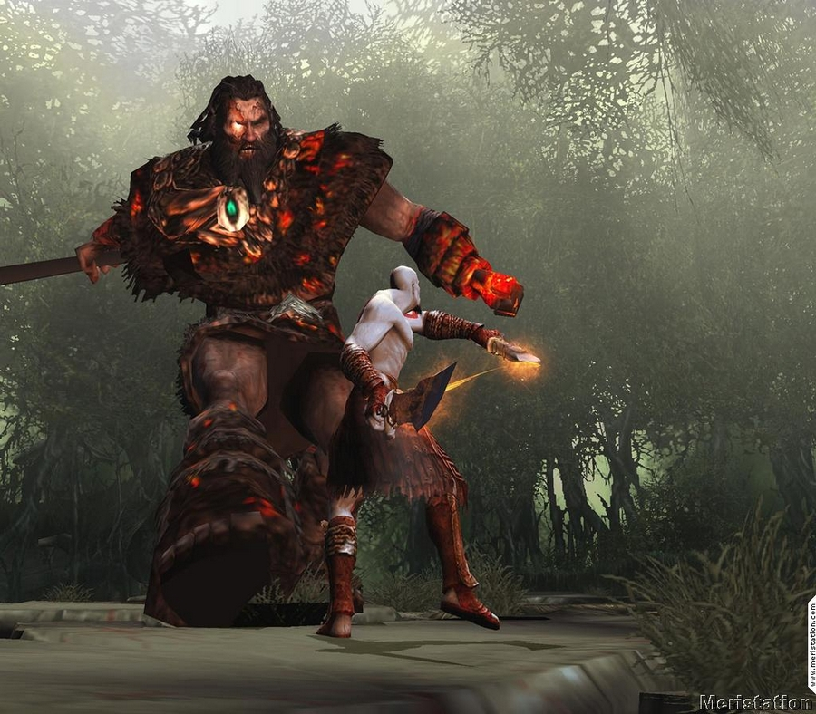

Information
About
God of War 2 (also known as God of War Divine Retribution) is a "hack and slash" game developed by SCE Santa Monica (California). It's the second game in the series, and despite not having a huge year gap with its predcessor, it showed major improvements.
After defeating Ares in the first video game of the series, Kratos, the new god of war, found a new family among spartan warriors, destroying and conquering city after city with them. But the god's anger grew every time this happened, which lead to the moment when Zeus, afraid of ending like Ares, betrayed Kratos, taking his powers away and slaying him afterwards. But this wasn’t the end of our protagonist: while being taken to the Underworld, Gaia gave Kratos an opportunity for revenge, which he accepted, escaping hell.
Gameplay
Throughout the game, we see Kratos travel to different destinations, killing different mythological creatures on his path to revenge against Zeus. This is something that did not happen until the third game was released, ending the Greek gods era for the series. Kratos' main weapon is a pair of blades attached to chains that are wrapped around the character's wrists and forearms. Called Athena's Blades (also known as the Blades of Athena) in this game, they can be swung offensively in various maneuvers. As the game progresses, Kratos acquires new weapons—the Barbarian Hammer, the Spear of Destiny, and the Blade of Olympus. Each of them changed the way you played the game, because every weapon had a different combat approach and different attacks to use. 
Upgrades
Hack and Slash
As mentioned earlier, when compared to the previous game of the series, God of War 2 brought new weapons, making the gameplay more diverse. But that wasn't the only change: God of War Divine Retribution brought new powers, objects and attacks, changing the series and its complexity forever. Winning the best game of the year in 2007, this “hack ans slash” is by many considered one of the best in history, with some of the most violent and bloody fights in the saga, and multiple puzzles to solve mixed with platform stages.